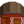

Goat
| Goat | |

| |
| Happy adults provide goat milk every other day. A milk pail is required to harvest the milk. Lives in the barn. | |
| Information | |
| Building |  Big Barn |
| Purchase Price | |
| Produce | |
The Goat is an animal that lives in a Big Barn. Goats can be purchased at Marnie's Ranch for  4,000g. Goats can become pregnant and give birth.
4,000g. Goats can become pregnant and give birth.
Produce
- Main article: Animals#Produce
Goats who eat every day mature after 5 nights have passed. A mature and fed goat produces Goat Milk every 2 days. Once sufficient friendship and happiness are reached, they will produce Large Goat Milk. Goat Milk can be collected using a Milk Pail.
Goat Milk can be placed in a Cheese Press to produce Goat Cheese, which sells for  400g or
400g or  600g depending on quality.
600g depending on quality.
| Image | Name | Description | Sell Price | ||||||||
|---|---|---|---|---|---|---|---|---|---|---|---|
| Goat Milk | The milk of a goat. |
| |||||||||
| Large Goat Milk | A gallon of creamy goat's milk. |
|
Reproduction
Goats, like cows, sheep, and pigs, have a low chance to reproduce. The more animals there are inside the same barn, the higher the chance an animal will give birth. There is no indication when a goat is pregnant except the morning after the baby goat has been born. The player will receive a notice at the bottom of the screen before the day starts, stating "During the night, [parent's name] gave birth to a baby goat."
Selling
Goats can be sold. The selling price is dependent on how many hearts the animal has ( 5,200g max).
5,200g max).
To sell a coop or barn animal, right-click the animal after petting. The friendship/mood interface appears. Move the cursor over the gold coin button at the right to see how much you can sell the animal for. Click that button and the confirmation that follows to complete the sale.
| Animals and Produce | |
|---|---|
| Coop | Chicken (Egg • Large Egg • Brown Egg • Large Brown Egg) • Dinosaur (Dinosaur Egg) • Duck (Duck Egg • Duck Feather) • Golden Chicken (Golden Egg) • Rabbit (Wool • Rabbit's Foot) • Void Chicken (Void Egg) |
| Barn | Cow (Milk • Large Milk) • Goat (Goat Milk • Large Goat Milk) • Sheep (Wool) • Ostrich (Ostrich Egg) • Pig (Truffle) |
| Fish Pond | Fish (Roe) |
| Slime Hutch | Slimes (Slime • Slime Ball • Slime Egg) |
| Other | Cat • Dog • Horse • Turtle |